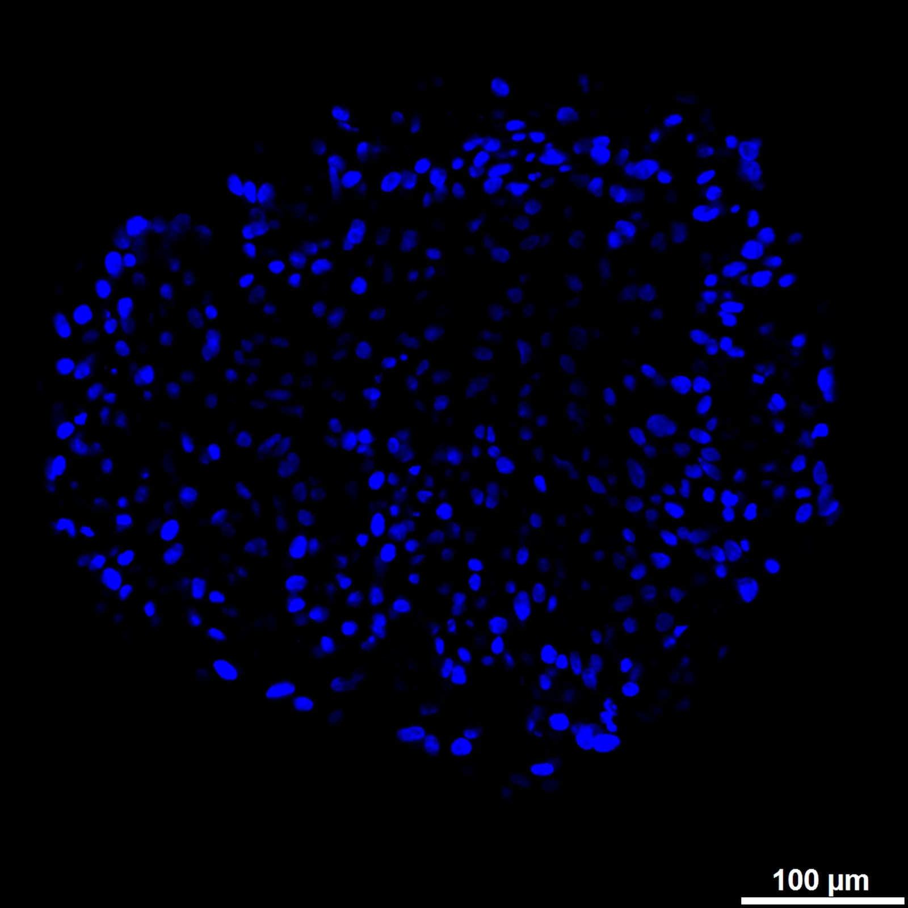
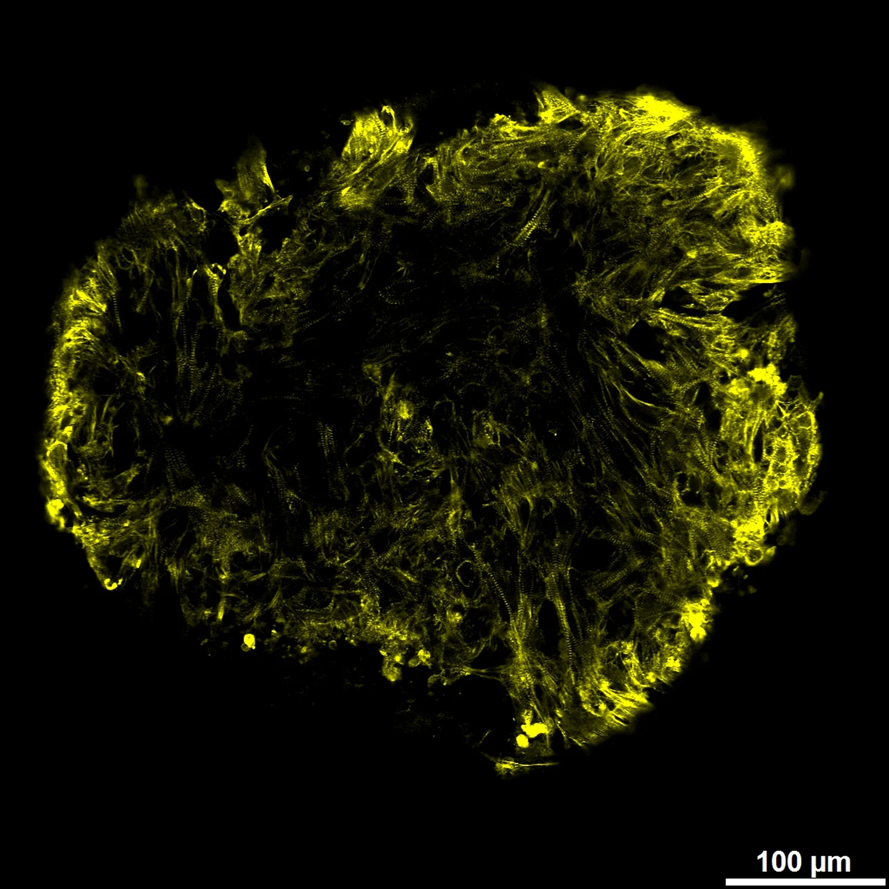
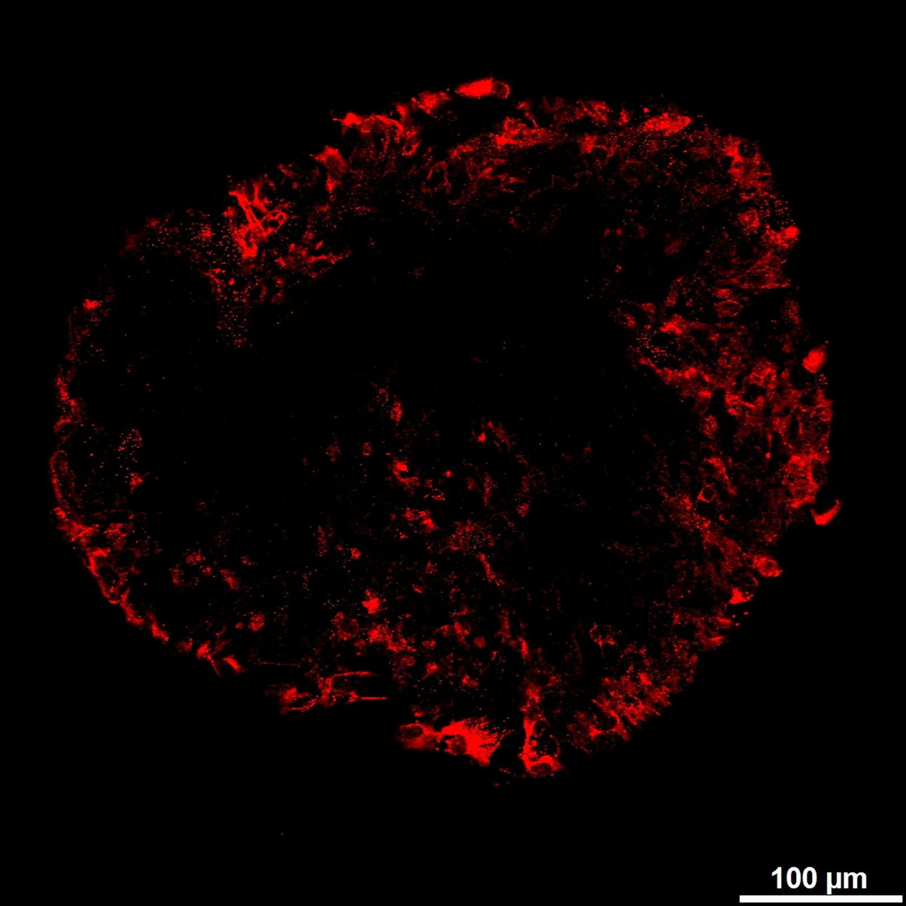
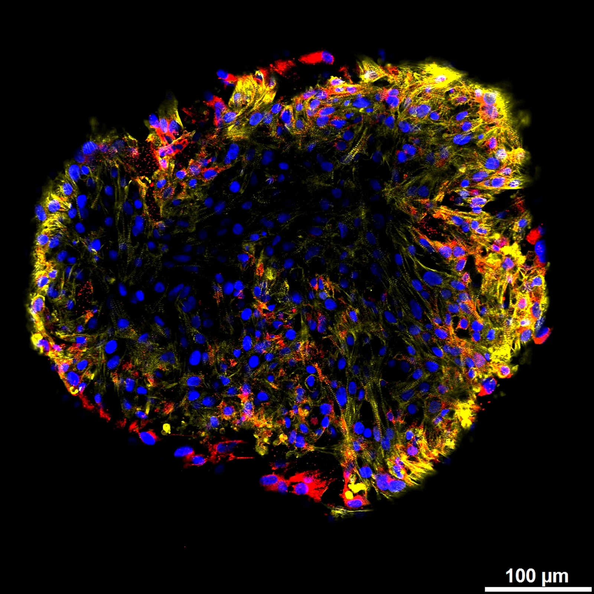
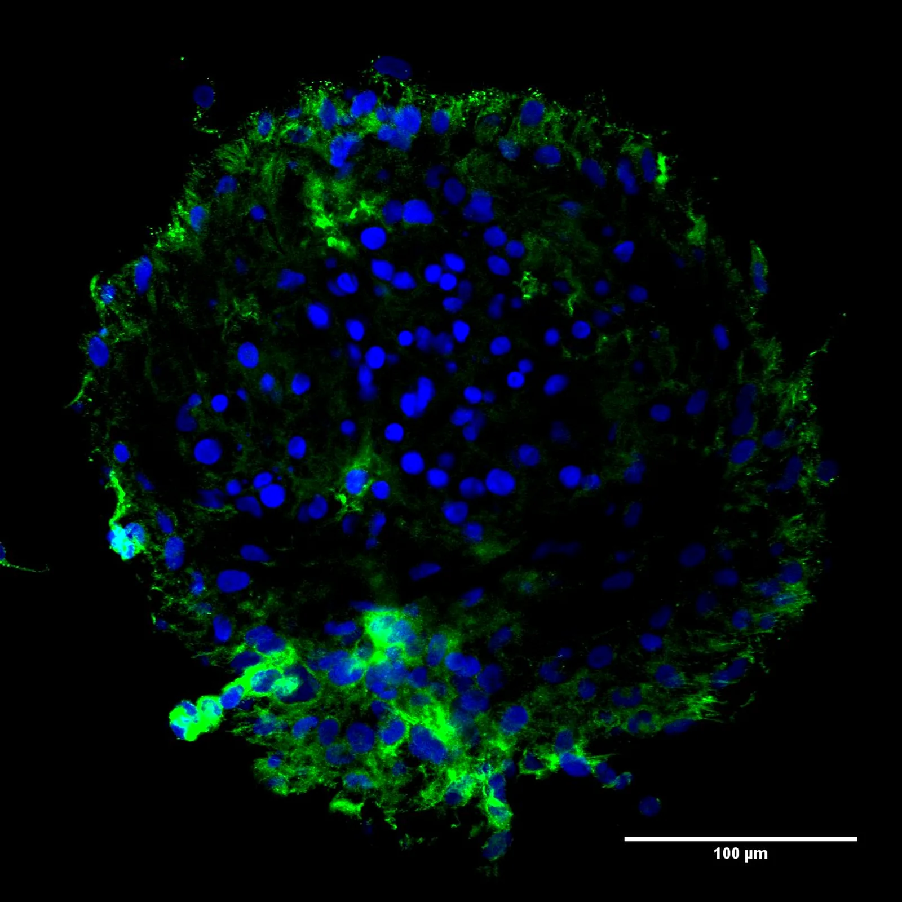

The lab develops scalable, clinically relevant cardiac cell and tissue systems by integrating stem cell biology, bioengineering, and translational research. Five interlocking programmes — scroll down through them.
The lab's research pipeline runs from iPSCs through differentiated cardiac cells, into organoids and engineered tissues, and out into disease modelling, drug testing, and transplantation. Each stage has its own platform.
Five research areas. One viewer. As you scroll each programme past the fold, the viewer swaps to the confocal channel that best resolves it — nuclei, sarcomere, lineage, drug response, vasculature.





Robust, reproducible production of human iPSC-derived cardiomyocytes and endothelial cells at a scale compatible with therapeutic and drug-testing applications. The manufacturing platform is the first mile of every downstream programme — it begins, as everything does, with the nuclei you can count.
Self-organising cardiac organoids and engineered microtissues built on hydrogel scaffolds. These three-dimensional systems resolve structure, contractility and the first emerging vascular networks — the sarcomere stripes in α-actinin are the first sign the tissue is behaving like a real heart.
In vitro models that reconstitute physiological and pathological cardiac conditions. We study how mechanical, biochemical and lineage cues shape tissue behaviour — and how those cues break down in disease. The RFP reporter lets us watch the cardiomyocyte fraction in real time.
Organoid-based compound validation combined with targeted editing of iPSCs and cardiac lineages. The same 3D systems that mature the tissue are used to interrogate the compounds and the alleles that shape it. All channels together, because every readout matters at once.
iPSC work in horse and camel, extending the lab's stem cell platform to large domestic species. The programme supports novel regenerative therapies for skin injury and osteoarthritis — and vascularisation, stained here by von Willebrand factor, is the limiting factor for every engineered tissue above a few hundred microns.
A purpose-built scroll story that walks through a single Vol. 01 specimen across five confocal channels. Nuclei, sarcomere, lineage, vasculature, composite.